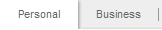
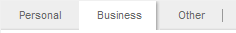
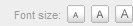
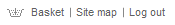
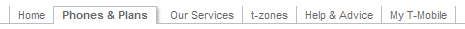

Tabless layout with content almost completely separated from presentation. Content column goes before left one in the code so it is more clear for search engines and more accessible for aural devices (navigation is not read out on each page).
shadow0, shadow1, shadow2, shadow3 divs are used for decorative purposes — they add shadows to the main box.
/* decorative layers */
.shadow0 {
background: #fff url(common/images/generic/meta_shadow_bgr_btm.gif) right top no-repeat;
clear: both;
margin-top: 1.7em;
padding-top: 2px;
width: 778px;
}
.shadow1 {
background: url(common/images/generic/shadow-right.gif) right top repeat-y;
clear: both;
}
.shadow2 {
background: url(common/images/generic/shadow-bottom.gif) left bottom repeat-x;
}
.shadow3 {
background: url(common/images/generic/shadow-corner-btm.gif) right bottom no-repeat;
padding: 0 5px 14px 0;
}
boxwrap fixes the with of the main container (minus shadow width).
boxbody's width equals width of left column + width of middle column.
column-middle is a middle column container. It goes before the left column. Both of them are floated to the right and have a fixed width.
#column-middle {
float: right;
width: 430px;
}
#column-left {
float: left;
width: 160px;
}
Right column doesn't use any float and is automaticly padded to it's place by the first two columns so we just define the upper margin in relative units (em) to give the respective space for absolutely positioned top navigation blocks and logo.
.boxbody, #column-right {
margin-top: 6em;
}
There are two divs, clearing the floats: one inside the boxwrap layer and one inside the boxbody.
<div class="clear"> </div>
.clear {
clear: both;
height: 1px;
overflow: hidden;
}

Personal/Business Tabs are located at the end of the code, after the main content in the metaNav div and are absolutely positioned with CSS.
There are currently 3 classes for the tabs: personal, business and other.
When you need to make one tab active, you add id="active-topnav" to the <li> tag.
<ul id="personal-business">
<li class="personal" id="active-topnav">
<a href="#">Personal</a>
</li>
<li class="business">
<a href="#">Business</a>
</li>
</ul>
#metaNav ul#personal-business li {
background: url(common/images/generic/meta_shadow_bgr.gif) no-repeat;
float: left;
margin: 0;
padding: 0;
}
html>body #metaNav ul#personal-business li {
height: auto;
}
#metaNav ul#personal-business li a {
background: url(common/images/generic/meta_link_bgr.gif) right center no-repeat;
display: block;
padding: 0.6em 18px 0.7em;
position: relative;
text-decoration: none;
}
#metaNav ul#personal-business li.personal {
background-image: none;
}
#metaNav ul#personal-business li.other {
background-image: none;
}
#metaNav ul#personal-business li.personal a {
background-image: none;
}
#metaNav ul#personal-business li.business#active-topnav {
background: #fff url(common/images/generic/meta_shadow_bgr.gif) right top no-repeat;
}
#metaNav ul#personal-business li#active-topnav {
background: #fff;
}
#metaNav ul#personal-business li#active-topnav a {
background-image: none;
}
#metaNav ul#personal-business {
float: left;
padding: 0;
width: 400px;
}
When you need to add another tab, use class="other"

<li class="other"><a href="#">Elsewhere</a></li>

Font switcher is also located near the end of the page body, after the main content in the metaNav div. It is hidden by default and is shown by the script. This is done because the buttons has no functionality when Javascript is disabled so they just don't appear for users without JS but with CSS enabled.
Note: as the buttons are floated to right, the code is given in reversed order.
<!-- Font-size switcher -->
<ul id="font-selector">
<li>
<a href="#" onclick="changeFontSize('150')">
<img src="common/images/generic/meta_f1.gif" alt="A1" title="Largest font size" />
</a>
</li>
<li>
<a href="#" onclick="changeFontSize('130')">
<img src="common/images/generic/meta_f2.gif" alt="A2" title="Larger font size" />
</a>
</li>
<li>
<a href="#" onclick="changeFontSize('100')">
<img src="common/images/generic/meta_f3.gif" alt="A3" title="Normal font size" />
</a>
</li>
<li id="font-size">Font size:</li>
</ul>
<!-- End of Font-size switcher -->
Logo is located inside logoNavigation which is also positioned absolutely with CSS.
Note: display: block is applied to the logo image to avoid unwanted space in IE.
<div id="logos">
<a href="#"><img src="common/images/topnav/logos/logo_tmobile.gif" width="162" height="23" border="0" alt="T-Mobile (UK)"></a>
</div>
/* Logo navigation */
#logoNavigation {
left: 0;
position: absolute;
top: 2em;
width: 778px;
}
#logos {
float: left;
margin: 22px 0 18px;
}
#logos img {
display: block;
}

Top extra links are floated to right inside logoNavigation block.
The basket icon is implemented as a background for appropriate <a> tag. Other icons can be also implemented by adding id or class in code for corresponding <a> and by adjusting paddings and assigning background in CSS.
Note: the <li> elements are floated to right, the code is given in reversed order.
<div id="topExtraLinks">
<ul>
<li><a href="#">Log out</a></li>
<li><a href="#">Site map</a></li>
<li id="top-basket"><a href="#">Basket</a></li>
</ul>
</div>
/* Top Extra Links */
#topExtraLinks {
float: right;
font-size: 0.7em;
padding: 15px 17px 0 0;
width: 300px;
}
#topExtraLinks ul {
list-style-type: none;
margin: 0 0 0 auto;
padding: 0;
}
#topExtraLinks ul li {
background: url(common/images/generic/topExtraLine.gif) left center no-repeat;
float: right;
padding: 0 6px;
}
#topExtraLinks ul li#top-basket {
background-image: none;
}
#topExtraLinks a {
color: #606060;
text-decoration: none;
}
#topExtraLinks ul li#top-basket a {
background: url(common/images/generic/basket.gif) left center no-repeat;
display: block;
padding-left: 24px;
position: relative;
}

Main menu is also positioned absolutely. It consists of <ul> elements, the dropdowns are also <ul>s that are located inside the first-level <li>s and shown up by the :hover rule in browsers supporting CSS Level 2 (Netscape7+,Mozilla,Firefox,Opera) and by Javascript that automaticly parses menu structure and adds onMouseOver events for IE. In order the menu to work correctly, it's id always should be the same (top).
Don't forget to close first-level <li> elements, keep in mind that the second level lists are inside the firs-level <li>s so they should be closed after it.
Spans inside the first-level <li> are required for the tabs to work correctly.
To make a tab active, add class="active" to the <li>.
Fist tab element should always have id="first".
<!-- Drop-down navigation -->
<div class="mainNav">
<ul id="top">
<li id="first"><span><a href="#">Home</a></span>
</li>
<li class="active"><span><a href="#">Phones & Plans</a></span>
<ul>
<li><a href="#">Buy online!</a></li>
<li><a href="#">Special Offers</a></li>
<li><a href="#">Find a store</a></li>
<li><a href="#">TeleSales</a></li>
</ul>
</li>
<li><span><a href="#">Our Services</a></span>
<ul>
<li><a href="#">Buy online!</a></li>
<li><a href="#">Special Offers</a></li>
<li><a href="#">Switching to T-mobile</a></li>
<li><a href="#">Upgrade!</a></li>
<li><a href="#">Find a store</a></li>
<li><a href="#">TeleSales</a></li>
</ul>
</li>
<li><span><a href="#">t-zones</a></span>
<ul>
<li><a href="#">Buy online!</a></li>
<li><a href="#">TeleSales</a></li>
</ul>
</li>
<li><span><a href="#">Help & Advice</a></span></li>
<li><span><a href="#">My T-Mobile</a></span></li>
</ul>
</div>
<!-- End of Drop-down navigation -->
.mainNav {
background: url(imgs/mainNav_bg.gif) repeat-x bottom;
font-size: 70%;
left: 0;
position: absolute;
top: 7em;
width: 770px;
}
.mainNav a
{
text-decoration: none;
}
#top, #top ul {
list-style: none;
margin: 0;
padding: 0; /* all lists */
}
#top {
padding: 10px 0 10px 162px;
}
.mainNav li {
float: left;
position: relative;
}
}
.mainNav li li {
float: none;
}
.mainNav span {
border-color: #bebebe;
border-style: solid;
border-width: 0 1px 0 0;
display: block;
padding: 0.2em 0 0 8px;
position: relative;
}
.mainNav #first span {
border-left-width: 1px;
}
.mainNav a {
color: #666;
display: block;
padding: 0 8px 0.2em 0;
}
.mainNav .active a {
display: block;
padding-right: 14px;
}
.mainNav .active span
{
background: url(imgs/mainNav_left_both.gif) no-repeat right top;
border-right: none;
}
.mainNav a:hover,
.mainNav a:active {
color: #333;
}
.mainNav .active a
{
background-image: url(imgs/mainNav_right_both.gif);
background-position: right bottom;
background-repeat: no-repeat;
font-weight: bold;
}
.mainNav .active li a
{
font-weight: normal;
}
.mainNav .active ul a
{
background-image: none;
}
.mainNav li ul {
display: none; /* second-level lists */
left: 0;
position: absolute;
}
.mainNav li ul, .mainNav li li {
margin-bottom: 0
}
.mainNav li li {
display: inline;
}
.mainNav li li a {
background: #eee;
background: #eee;
border-bottom: 1px solid #b8b8b8;
display: block;
padding: 0.2em 0.3em;
position: relative;
width: 160px
}
html>body .mainNav li li {
display: block;
float: none;
height: 1.7em;
padding: 0;
z-index: 300;
}
.mainNav li li a:hover {
background: #999;
color: #fff;
}
html>body .mainNav li li a {
background: #eee;
display: block;
width: 160px;
margin: 0
}
.mainNav li>ul {
left: auto;
top: auto;
/* to override top and left in browsers other than IE,
which will position to the top right of the containing li,
rather than bottom left */
}
.mainNav li:hover ul, .mainNav li.over ul {
display: block; /* lists nested under hovered list items */
}